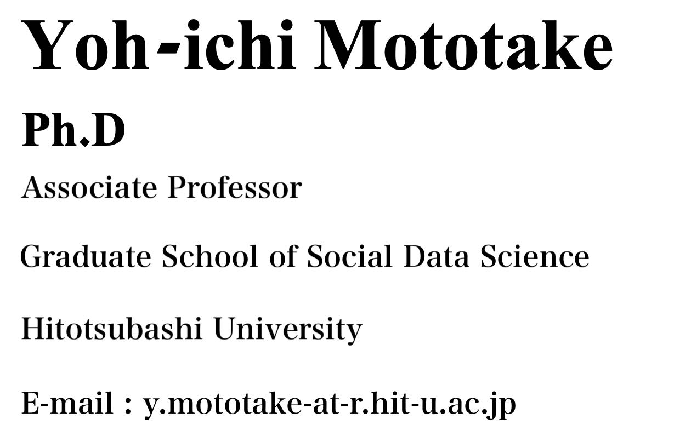
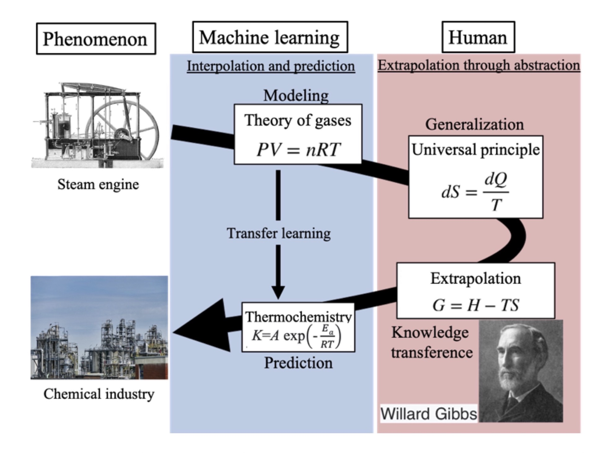

|

 Mototake Lab's HP
Mototake Lab's HP
|
 |
Curriculum Vitae
Education
| B.S. | degree in physics | in 3/2008 | from Tohoku University |
| M.Sc. | degree in physics | in 3/2010 | from Hokkaido University |
| M.A. | degree in arts and science | in 3/2013 | from University of Tokyo |
| Ph.D. | degree in arts and science | in 3/2016 | from University of Tokyo |
Research experience
| 4/2016~3/2019 | Graduate School of Frontier Sciences, | The University of Tokyo, | Project Researcher : | Research on data-driven science in Masato Okada's Lab. |
| 4/2019~12/2022 | The Institute of Statistical Mathematics, | Research Centre for Statistical Machine Learning, | Project Assist. Prof.: | Research on statistical machine learning in Kenji Fukumizu's Lab. |
| 1/2023~ | Hitotsubashi University | Graduate School of Social and Data Sciences, | Associate Professor: | Engaged in research on data-driven science with interpretable AI |
Teaching experience
| 10/2021~ | Hitotsubashi University | Part-time lecturer | 「Introduction to AI」 |
| 4/2021~ | Rikkyo University | Part-time lecturer | 「Data science practical training」 |
| 4/2020~7/2020 | Tsukuba University | Part-time lecturer | 「Mathematical Sciences 1（Differential and Integral Calculus）」 |
| 9/2019~ | Seijo University | Part-time lecturer | 「Data Science Applications」「Advanced Programme in Data Science」 |
Awards
| SWARM2019: The 3rd International Symposium on Swarm Behavior and Bio-Inspired Robotics, Best Paper Award Finalists | |
| Takayuki Niizato, Kotaro Sakamoto, Yoh-Ichi Mototake, Hisashi Murakami, Yuta Nishiyama, Toshiki Fukushima | （2019） |
| Best Presentation Award, 1st Public Symposium, Tokyo University of Science, Department of Interdisciplinary Brain Research | （2017） |
| National Conference of the Japanese Society for Artificial Knowledge 2016 Annual Conference Award | （2016） |
| SWARM 2015: The First International Symposium on Swarm Behavior and Bio-Inspired Robotics, Best Student Paper Award Finalists | （2015） |
Funds
| National Research and Development Corporation |
| New Energy and Industrial Technology Development Organization (NEDO)Unexplored Challenge 2050（22100843-0) Research Representative |
| ‘Creation of Materials Pattern Informatics for Innovative Ceramic Material Design’ |
| Period: 2022-08 to 2025-07 |
| Wakate Study (No.22K13979) Research Representative |
| 'Developing machine learning methods for discovering unknown symmetries in pattern dynamics' |
| Period: 2022-04 to 2027-03 |
| Mathematical structure extraction of pattern dynamics using interpretable AI and its application to materials informatics. |
| National Science and Technology Agency, Strategic Creative Research Promotion Programme (PRESTO) |
| Period: 2021-10 to 2025-3 |
| New Academic Field Research (Research Field Proposal Type) (No.20H04648) Research Representative |
| 'Building a reduced model of the pattern formation process through topological data analysis.' |
| Period: 2020-04-01 2022-03-31 |
| Joint Utilization of the Institute of Statistics and Mathematical Sciences (General Studies 2) (No.2020-ISMCRP-2069) |
| 'TDA analysis of ferromagnetic domain pattern formation processes.' |
| Period: 2020-04-01 2021-03-31 |
| Joint Utilization of the Institute of Statistics and Mathematical Sciences (General Studies 2) (No.2020-ISMCRP-2070) |
| 'A review of methods for applying algebraic geometric learning theory to physical data analysis' |
| Period: 2020-04-01 2021-03-31 |
Contact
| Affiliation：Graduate School of Social and Data Sciences, Hitotsubashi University (Mototake Lab.) |
| Address：Room 227, East Main Building, 2-1 Naka, Kunitachi-shi, Tokyo 186-8601 |
| Telephone：042-580-9222（Direct communication） |
| E-mail : y.mototake-at-r.hit-u.ac.jp |